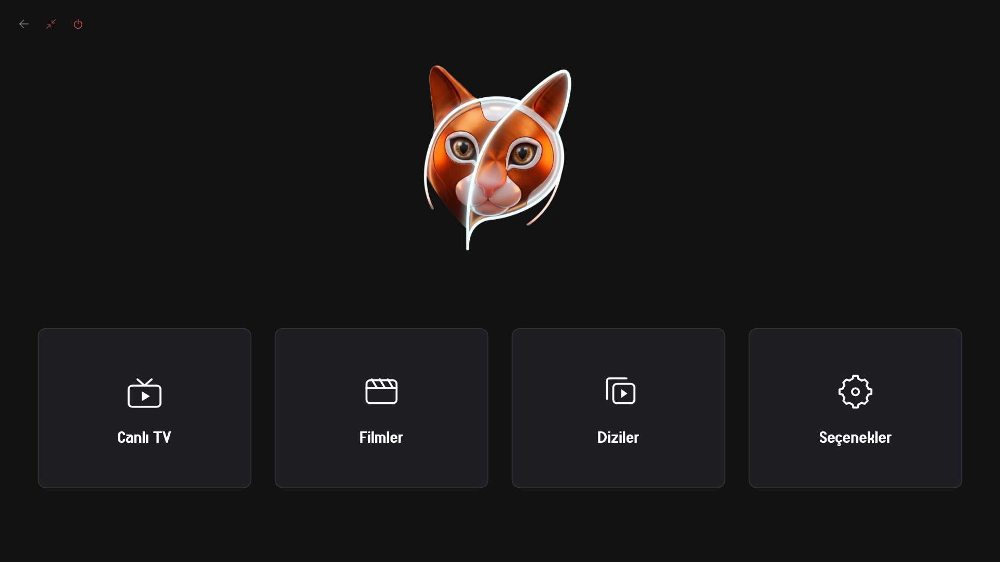
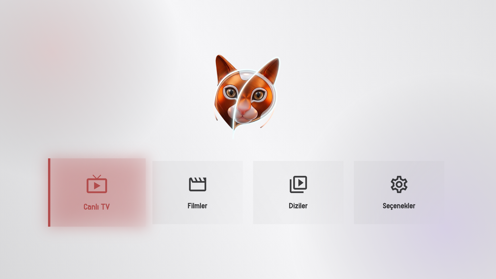

Kelime Avcısı
v1.6Türkçe sözcük hazinesini keşfetmenizi sağlayan etkileşimli kelime oyunu. 1000+ seviye.
İndirLibVLC ve MediaKit GPU hızlandırması, akıllı kanal kütüphanesi ve IMDb entegrasyonuyla Windows ve Android için geliştirilmiş ultra hızlı eğlence merkezi.
Inno Setup tek tıkla kurulum, LibVLC GPU çözücü ve düşük donanım tüketimiyle masaüstünüzde 4K akıcı yayın keyfi.

Minimalist saf beyaz arayüz mimarisi; TV kumandası veya dokunmatik ekranınızla kusursuz uyum.

Telefon veya tablet kameranızı doğrultarak Google Play Store üzerinden anında yükleyin.
Google Play'den Yüklecom.pusu.iptv • v18.3.0
Kusursuz bir yayın deneyimi için tasarlanmış çekirdek teknolojiler.
Regex tabanlı arama motoruyla Spor, Çocuk, Dizi, Film ve Haber yayınlarını anında ayrıştırır.
Ekran kartı donanım çözücüsü sayesinde 4K ve 8K akışlarda bile minimum işlemci kullanımı.
Anlık çözünürlük, bit hızı, kodek ve ses bilgilerini yayını bölmeden şeffaf panelle sunar.
Canlı yayınları doğrudan diskinize kaydedin veya deklanşör efektiyle anlık ekran karesi alın.
Film ve dizi afişleri, puanları ve özetleri arka planda taranarak kütüphaneniz zenginleştirilir.
M3U ve Xtream API hesaplarınızı tek merkezden yönetin, favorilerinizi yedekleyin.
Tüm dijital medya arşivinizi 4 ana başlık altında derli toplu yönetin.
Yerel ve dünya kanalları arasında takılmadan gezinin. Dinamik ülke bayrakları ve anlık EPG desteği.
Zengin sinema arşivi. Otomatik IMDb puanlama ve afiş önbellekleme ile ne izleyeceğinizi hemen seçin.
Sezon ve bölüm hiyerarşisi. Nerede kaldığınızı hatırlayan akıllı geçmiş motoruyla kesintisiz maraton.
En çok izlediğiniz içerikleri tek tıkla sabitleyin, son izlenenler geçmişiyle yayına anında dönün.
Püsü IPTV, adını ve sıcak ruhunu evimizin neşesi sarman dostumuz Püskül'den alıyor.
Bir kedinin meraklı gözleri gibi ayrıntıyı yakalayan, bir pati hamlesi kadar hızlı kanallar arasında zıplayan ve sıcacık bakır-turuncu çizgileriyle ev konforu sunan bir arayüz hayal ettik.
Okan707 tarafından geliştirilen bağımsız Windows ve mobil uygulamalar.
Türkçe sözcük hazinesini keşfetmenizi sağlayan etkileşimli kelime oyunu. 1000+ seviye.
İndirTürkçenin köklü atasözü ve deyim hazinesini modern kart tasarımıyla sunan kültür projesi.
İndirEğitim kurumlarının yönetim ve öğrenci takip süreçlerini sadeleştiren veri analiz sistemi.
İndirOkan Bayındır, Püsü IPTV uygulamasını Ücretsiz ve reklam destekli bir uygulama olarak geliştirmiştir. Bu HİZMET, Okan Bayındır tarafından ücretsiz olarak sağlanmaktadır ve olduğu gibi kullanılması amaçlanmıştır.
Bu sayfa, Hizmetimizi kullanmaya karar veren ziyaretçileri, kişisel bilgilerin toplanması, kullanılması ve ifşa edilmesiyle ilgili politikalarımız hakkında bilgilendirmek için kullanılmaktadır.
Püsü IPTV uygulaması, doğası gereği kullanıcılarından doğrudan isim, telefon numarası veya e-posta adresi gibi hassas kişisel veriler talep etmez veya toplamaz. Eklediğiniz M3U veya XML formatındaki oynatma listeleri ve içerikler tamamen sizin cihazınızda yerel olarak işlenir ve sunucularımıza kopyalanmaz.
Ancak uygulama, temel işlevlerini yerine getirebilmek ve ücretsiz yapısını koruyabilmek için sizi tanımlamakta kullanılabilecek cihaz bilgilerini toplayabilen üçüncü taraf hizmetleri (Google AdMob) kullanmaktadır. Bu veriler, reklamların size uygun şekilde gösterilebilmesi amacıyla Reklam Kimliği (Advertising ID) gibi anonimleştirilmiş cihaz tanımlayıcılarını içerebilir.
Uygulama tarafından kullanılan üçüncü taraf hizmet sağlayıcılar:
Hizmetimizi her kullandığınızda, uygulamada bir çökme veya hata olması durumunda telefonunuzda Günlük Verileri (Log Data) adı verilen veri ve bilgileri (üçüncü taraf ürünler aracılığıyla) topladığımızı bildirmek isteriz. Bu veriler, cihazınızın İnternet Protokolü ("IP") adresi, cihaz adı, işletim sistemi sürümü, uygulama yapılandırması, çökme saati ve tarihi gibi teknik istatistikleri içerebilir. Bu veriler yalnızca uygulamanın hatalarını gidermek ve performansını artırmak amacıyla kullanılır.
Püsü IPTV, standart web çerezlerini doğrudan kullanmaz. Ancak uygulama, bilgi toplamak ve hizmetlerini iyileştirmek için "çerezler" veya benzer izleme teknolojileri kullanan üçüncü taraf SDK'lar ve kütüphaneler barındırabilir. Cihaz ayarlarınız üzerinden reklam kimliğinizi sıfırlayabilir veya kişiselleştirilmiş reklamları kapatabilirsiniz.
Cihazınızdaki verilerin ve uygulamanın güvenliğine değer veriyoruz. Bu nedenle bilgilerinizi korumak için ticari olarak kabul edilebilir yöntemler kullanmaya çalışıyoruz. Ancak, internet üzerinden hiçbir aktarım yönteminin veya elektronik depolama yönteminin %100 güvenli olmadığını ve mutlak güvenliğini garanti edemediğimizi unutmayın.
Bu Hizmet, diğer sitelere bağlantılar içerebilir. Uygulama içerisinden üçüncü taraf bir bağlantıya tıklarsanız, o siteye yönlendirilirsiniz. Bu harici sitelerin bizim tarafımızdan işletilmediğini unutmayın. Bu nedenle, bu web sitelerinin Gizlilik Politikalarını gözden geçirmenizi şiddetle tavsiye ederiz.
Bu Hizmetler 13 yaşın altındaki çocuklara doğrudan hitap etmemektedir. 13 yaşın altındaki çocuklardan bilerek kişisel olarak tanımlanabilir bilgiler toplamıyoruz.
Gizlilik Politikamızı zaman zaman güncelleyebiliriz. Herhangi bir değişiklik olması durumunda bu sayfayı güncelleyerek yeni Gizlilik Politikasını burada yayınlayacağız. Değişiklikler, bu sayfada yayınlandıktan hemen sonra yürürlüğe girer.